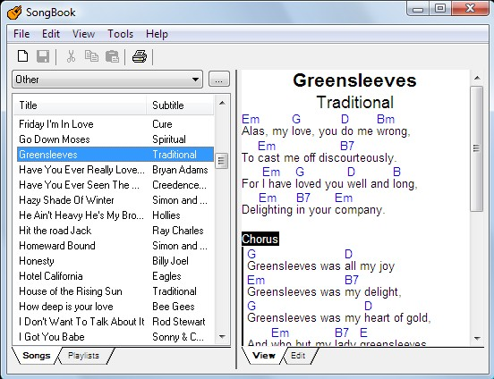

Rather than carry around sheets of paper for everybody, fumbling and trying to find the right song sheet etc., you can use your computer to help automate this process.
A chordpro file (signified by a .pro extension) is not a fancy file format, but it gets the job done and is easy to edit with any editor like notepad. You can google "chordpro" and read all about the format if you like.
If you have a iPad or a Android tablet you can have all of your songs with you wherever you go. Linked with DropBox and everybody can be on the same page. Worst case you have all of the music you know at your fingertips. There are two apps, one for iPads (OnSong) and the other for Android and PCs (Songbook) that will work with .pro file to render them nicely on your iPad or Android tablet. And Songbook also works on your Windows PC where you can print out copies of the songs if you inist on dealing with paper.
Finally, you could go to my website and render any of the songs in my Songbook using the web (described below).
Chordpro file format
You can go to http://defaria.com/songbook/Songs and you'll see a list of all the files in that directory, the .pro files of the songs I have. You can click on any of them but what you will get is an unrendered version of the .pro file. For example: If you click on Brown Eyed Girl.pro you'll see:
{t:Brown Eyed Girl}
{st:Van Morrison}
{key:G}
[G]Hey, where did [C]we go, da[G]ys when the ra[D]ins came
[G]Down in the holl[C]ow, [G]playin' a ne[D]w game
[G]Laughin' and a-s[C]ingin' hey-hey, [G]skippin' and a-j[D]umpin'
[G]In the misty mor[C]ning fog, with o[G]ur he[D]arts thumpin and yo[C]u[D]
My Brown-eyed gi[G]rl[Em], yo[C]u my[D] brown eyed [G]girl [D]
[G]Hey whatever [C]happened, [G]Tuesday went [D]so slow
[G]Goin down the [C]old mine with a [G]transistor [D]radio
[G]Standin' in the [C]sunlight laughin', [G]hide behind the [D]rainbow's wall
[G]Slippin' and a-[C]slidin', [G]all along the [D]waterfall with [G]you
My Brown-eyed gi[G]rl[Em], yo[C]u my[D] brown eyed [G]girl [D]
{soc}
[D]Do you remember when we used to [G]sing
Sha-la-la [C]la-la la-la [G]la-la la-la [D]de-da
[G]Sha-la-la [C]la-la la-la [G]la-la la-la [D]de-da
La-de-[G]da[D]
{eoc}
[G][Em][C][D][G][D]
So hard to find my way, now that I'm all on my own
Saw you just the other day, my how you have grown
Cast my memory back there lord, sometimes I'm overcome, thinkin'bout
Making love in the green grass, behind the stadium with you
My brown eyed girl, you my brown eyed girl
{soc}
[D]Do you remember when we used to [G]sing
Sha-la-la [C]la-la la-la [G]la-la la-la [D]de-da
[G]Sha-la-la [C]la-la la-la [G]la-la la-la [D]de-da
La-de-[G]da
{eoc}
You see things like {t:Brown Eyed Girl} (title) and {key:G} as well as embedded tags for the chords ([G], [C], etc). Doesn't look as pretty right? But when you include the webchord.cgi portion you are running a script named webchord.cgi which reads the file from the parameter chordpro (that's why you need the chordpro=song.pro portion) and then reformats stuff into HTML that looks pretty, centering the title of the song, putting the chords over the words and bolding the text between {soc} and {eoc} (start of chorus, end of chorus). So given the above SongTitle="Brown Eyed Girl" we can formulate the URL to render it thusly:
http://defaria.com/songbook/webchord.cgi?chordpro=/web/songbook/Songs/Brown Eyed Girl.pro
You can do the same thing for the other songs there too.
I should just write a quick script that gets all of the .pro files in the directory songbook/Songs and then formulates a page of links that have the webchord.cgi links to render them like:
You have to fill in the <SongTitle> portion of the link. So, for example, you take:
http://defaria.com/songbook/Songs/webchord.cgi?chordpro=<SongTitle>.pro
pop it into the address bar of your browser then change <SongTitle> to the title of the song you want to render:
http://defaria.com/songbook/webchord.cgi?chordpro=/web/songbook/Songs/Amie.pro
Note:
- URLs are case sensitive! ...chordpro=amie.pro is not the same as ...chordpro=Amie.pro
- Browsers tend to change spaces in a URL to %20. %20 is the octal representation for a space character. So if you see %20 in a URL like http://defaria.com/songbook/webchord.cgi?chordpro=/web/songbook/Songs/Back%20in%20the%20USSR.pro. Don't fear - they're merely spaces.
Songbook for PC
You can get a Windows PC version of Songbook at http://linkesoft.com/songbook/windows.html. It will run on your PC and render songs like:
It's $20 and you can even print out your stuff if you still use paper or need paper for other people.